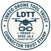

View the stamp
See what a connector is allowed to touch — before you plug it in.
“It only watches.” Make that claim checkable.

See what a connector is allowed to touch — before you plug it in.
Level (e.g. Observe), declared scope, identity — about the connector, not the airframe.
Checked connector. Declared scope. Cut-off if something goes wrong. When tooling is available, check signature and build provenance per Spec.
LDTT is designed so a bad or outdated connector can be cut off with a signed revocation list.
Observe first: read telemetry within declared limits — no motion commands in scope.
On-page: you can see stamp mark + honesty language + path to Spec/repo.
Not: flight approval, FAA clearance, aircraft or operator certification.
Deep rules: Trust.
Example Observe YAML: examples/ldtt.observe.example.yaml